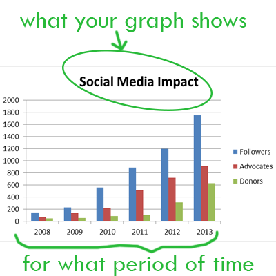
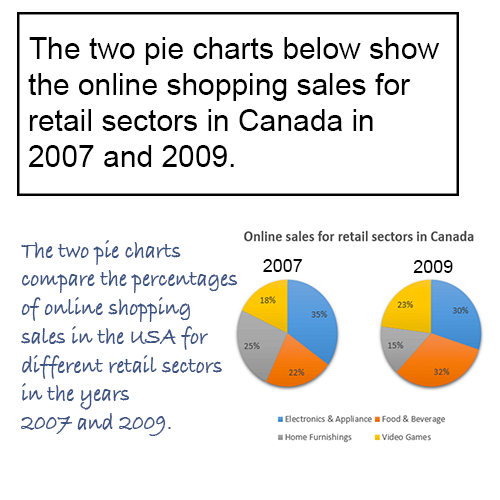

IELTS Academic task 1
Lesson 1: how to write introduction? 
You should start your task 1 answer by introducing the graph from your question. Just write 1-2 sentences to say what your graph shows and for what period of time (if there is one).
To do this, you need to paraphrase text from your task 1 question.
Example of good introduction:
Question:
The graphs below give information about computer ownership as a percentage of the population between 2002 and 2010, and by level of education for the years 2002 and
2010.
Introduction:
The bar charts show data about computer ownership, with a further classification by
level of education, from 2002 to 2010.
To write a good introduction, follow these techniques:
Change introductory expressions
the graph/chart/table/diagram
- gives information about/on
- provides information about/on
- shows
- illustrates
- represents
- depicts
- gives reason why (only if graph provides reasons for smth)
- explains why (only if graph provides explanation for smth)
- compares (only if several items are compared)
- compares smth in terms of smth
the charts compare two cities in terms of the number of employed people. - compares smth in year1 and year2
the graph compares the population in 2000 and 2013.
Attention with word compare! You can say:
Examples:
- “The pie charts provide information on the proportion of males and females working in agricultural sector.” OR “The pie charts show the proportion of males and females working in agricultural sector.”
- “The table compares five companies in terms of the number of employees.” OR “The table illustrates the number of employees in five companies.”
Paraphrasing
You can rewrite a phrase by using the word how:
- shows the number of people ... = shows how many people ...
- depicts changes in spending on ... = depicts how much changed spending on ...
You can rewrite a phrase by using synonyms:
- number of = quantity of (not interchangeable with amount of)
- spending = expenditure
- rate = percentage
- ratio = proportion
- information = data
- change can be sometimes replaced by increase, decrease or variation
- share = portion
- place = site
Time periods
- from 1985 to 1995 = between 1985 and 1995
- in 1985 = in the year 1985
- in 1985 and 1995 = in 1985 and 1995 respectively = in the years 1985 and 1995
Examples:
- The table shows consumption rates from 2001 to 2004.
- The graph shows consumption rates in 2012 and 2015 respectively.

Paraphrasing in use:
See how the topic was paraphrased to make a very good task 1 introduction (picture on the right).
What was changed:
- Show is changed to compare
- Percentages added
- Different added
- In 2007 and 2009 → In the years 2007 and 2009
As you see, you don't have to make up a completely new introduction. Just take the given topic as a base, and change/add some details.